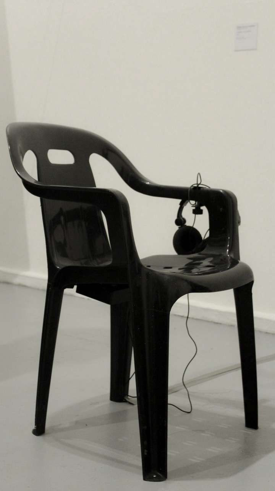
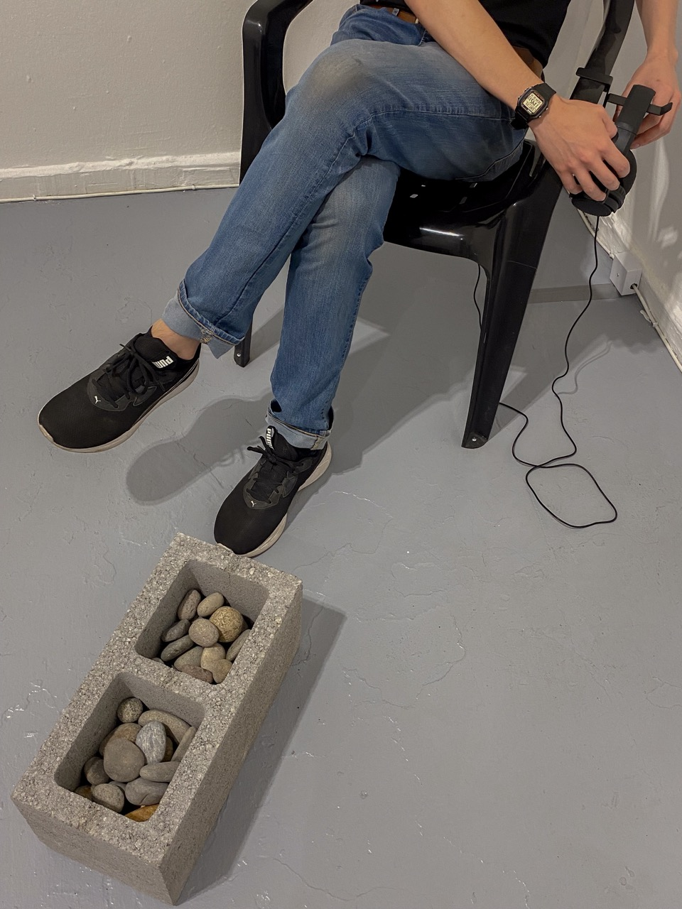
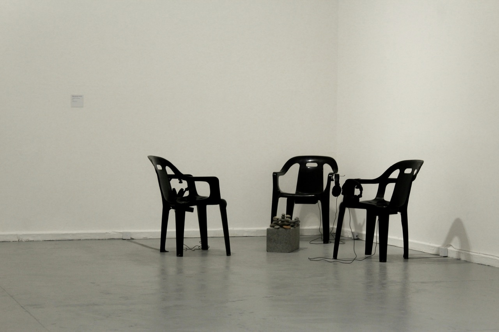
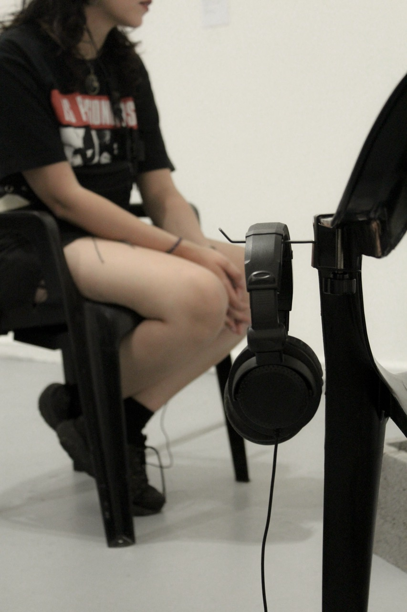

Lenguaje y comunicación
Instalación sonora. 3 sillas de plástico negras, 3 audífonos, 3 reproductores de audio, ladrillo de concreto, piedras de río, archivo de audio en mp3 de 28 minutos dividido en 3 partes
Parte de la exposición colectiva Balmaceda Visual: Bordes Fluidos en Museo de Arte Contemporáneo de Quinta Normal. 2024.
Proyecto AFE Tesis guiado por Rainer Krause
Asistencia en montaje: Equipo MAC Quinta Normal
Agradecimientos a mi amigo anónimo que colaboró en la grabación y a Catalina Montero por la ayuda en la edición del texto
La mayoría de las fotografías por Mana Rivas

La obra propone una lectura en torno a la comunicación y los gestos que la constituyen. Mediante la amplificación de los espacios negativos de una conversación, como los titubeos, silencios, muletillas y respiraciones, se busca retorcer los conceptos de emisor, receptor y mensaje. La obra sitúa a quien experiencia la obra en medio de un extenso diálogo que parece no llevar a ninguna parte, en el que la conversación de dos personas es editada de forma en que se deja oír solo el ruido entre palabras. La experiencia de la obra se completa al sentarse en una de las tres sillas, alrededor de un ladrillo de concreto que contiene piedras ovaladas, generando una puesta en escena -paradójicamente- tan extraña como habitual. La instalación simula una situación social que podría estar ocurriendo en cualquier parte del mundo. Con este gesto, se plantean preguntas sobre los rudimentos que constituyen al lenguaje: ¿Por qué hablamos como hablamos? ¿Cómo decimos lo que decimos? ¿Qué escuchamos cuando escuchamos?
